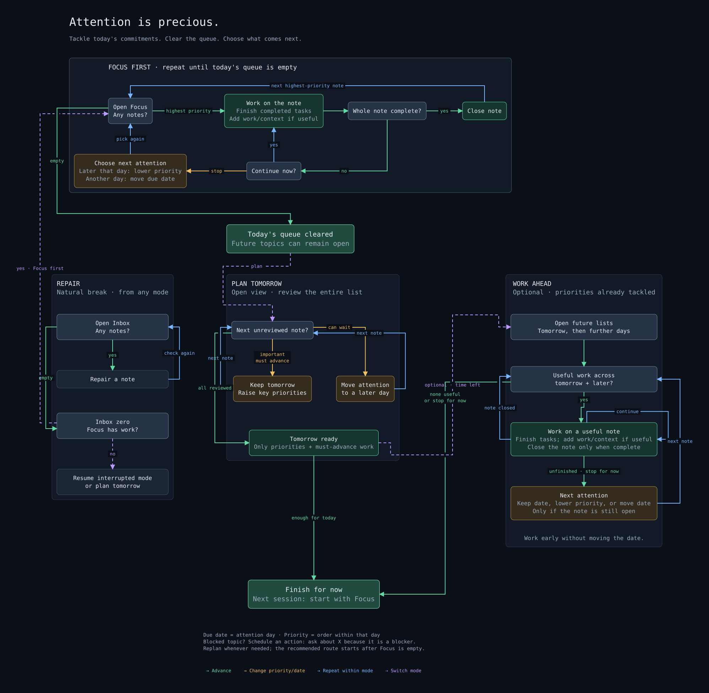

Daily workflow
A note can hold a project, a single action, a recurring responsibility, or something you are waiting for. Keep the supporting information in the note and use its next task to decide when to return.
If you are new, start with the three-note setup. This guide describes a suggested routine; the feature reference explains the exact board rules.
One note, one next action
Section titled “One note, one next action”Focus, Open, and Inbox show one row per note. The visible action is the
unchecked task with the earliest 📅 due date, even if it appears farther down
the note. If several tasks share that date, the first one in the note wins.
If none are dated, Open and Inbox show the first unchecked task.
You can keep later steps undated. After completing the dated task, choose the next step and give it a date. If the note remains open without a dated action, Inbox reminds you to make that decision.
Dates and priorities
Section titled “Dates and priorities”Treat 📅 YYYY-MM-DD as the next attention date: when should this action
come back into view? Tasks Eye reads this due marker; scheduled and start
markers do not control its boards.
A past attention date is shown as overdue. That is a prompt to complete or reschedule the work. Keep a hard external deadline in the task text, note body, or calendar when it differs from the next attention date:
- [ ] Draft the tax return — filing deadline: 30 April 📅 2026-04-20Focus orders notes by date first, then the selected task’s priority within that date. Context and note title break further ties. Raising priority does not move a later-dated note ahead of an earlier-dated one.
A daily attention workflow
Section titled “A daily attention workflow”- Open Focus. Choose a note needing attention today. Complete its next action, or open the note to work with its supporting information.
- Decide what follows. Add the next action if work remains. Continue now, lower its priority among tasks on the same date, or move its date forward.
- Close finished notes. Set
status: closedwhen no unchecked work remains. - Repair Inbox at a natural break. Resolve missing links, tasks, dates, and other issues. A repair may bring a note back into Focus.
- Plan in Open. Review tomorrow and later dates. Keep a realistic amount of work on each day, then finish for now or work ahead.
An empty Focus means today’s queue is handled. Future work can remain open. An empty filtered view only describes the selected context; select the whole tree to review everything.

Open the full-size workflow diagram. Scroll horizontally to read it here on a narrow screen.

Capture now, organize when you can
Section titled “Capture now, organize when you can”Create a note inside your chosen notes folder and write down enough to resume
later. If you know its parent, add an up link immediately. Otherwise, Inbox
will remind you to add it.
For example, under a Home → Work tree, a meeting note can start with:
---status: openup: "[[Work]]"---
- [ ] Ask which decision the meeting needs 📅 2026-10-01Replace the example date with the day you want to revisit it. Move general
reference outside the notes folder or into an excluded folder. Reference kept
inside the tree can use status: closed with no unchecked tasks.
Keep note status simple
Section titled “Keep note status simple”| Status | Meaning | What Inbox checks |
|---|---|---|
open |
Work remains active, even if its next date is in the future. | Needs an unchecked task and a due date on at least one unchecked task. |
closed |
Keep the note as finished work or reference. | Must have no unchecked tasks. |
| Missing or blank | Treated as open. |
The same checks as an open note. |
Other explicit statuses are reported in Inbox. Parent links and tree structure are checked for closed notes too.
Closing a note does not complete its tasks. Finish, remove, or move remaining unchecked work as appropriate. To defer work, leave the note open and move its next attention date.
Review and resume
Section titled “Review and resume”Open gives you the full planning horizon, including undated notes. Expand a date section and review the next action on each note. Use the context filter to review one branch, such as Work or Personal.
Done shows tasks with a completion date matching the selected day. Its Unfinished option adds dated unfinished tasks from those same notes, which can help you find follow-up work. It is optional history review, with no required cadence.
Tree shows where the active note sits among its parents and descendants. Use it when you need to move from a task back to its broader project or area.
For a weekly review and patterns such as Waiting For and Someday / Maybe, see the optional GTD guide.